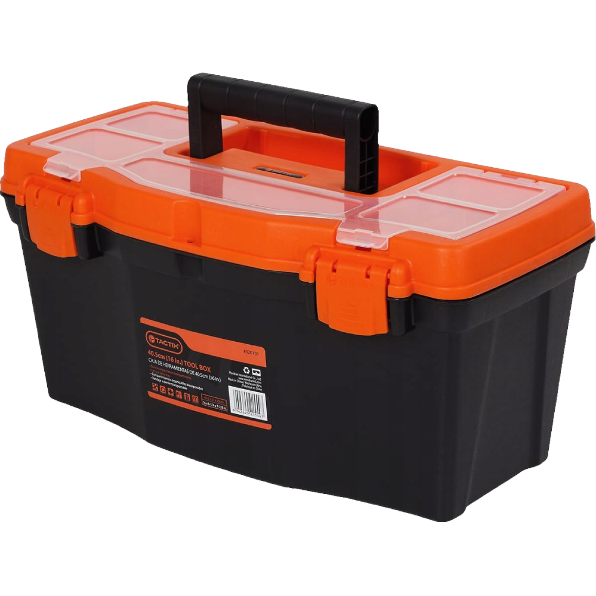

<ion-header [translucent]="true">
  <ion-toolbar>
    <ion-buttons slot="start">
      <ion-menu-button></ion-menu-button>
    </ion-buttons>
    <ion-title>{{ folder }}</ion-title>
  </ion-toolbar>
</ion-header>

<ion-content [fullscreen]="true">
  <ion-header collapse="condense">
    <ion-toolbar>
      <ion-title size="large">{{ folder }}</ion-title>
    </ion-toolbar>
  </ion-header>

  <div style="text-align: center;">
    
  </div>
</ion-content>
